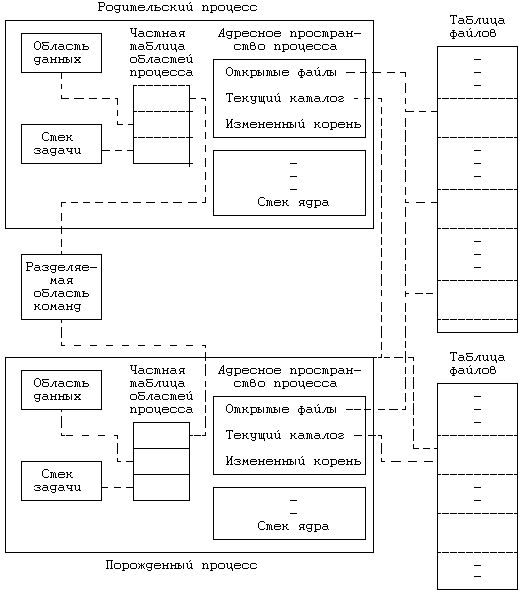

Единственным способом создания пользователем нового процесса в операционной системе UNIX является выполнение системной функции fork. Процесс, вызывающий функцию fork, называется родительским (процесс-родитель), вновь создаваемый процесс называется порожденным (процесс-потомок). Синтаксис вызова функции fork:
pid = fork();
В результате выполнения функции fork пользовательский контекст и того, и другого процессов совпадает во всем, кроме возвращаемого значения переменной pid. Для родительского процесса в pid возвращается идентификатор порожденного процесса, для порожденного - pid имеет нулевое значение. Нулевой процесс, возникающий внутри ядра при загрузке системы, является единственным процессом, не создаваемым с помощью функции fork.
В ходе выполнения функции ядро производит следующую последовательность действий:
- Отводит место в таблице процессов под новый процесс.
- Присваивает порождаемому процессу уникальный код идентификации.
- Делает логическую копию контекста родительского процесса. Поскольку те или иные составляющие процесса, такие как область команд, могут разделяться другими процессами, ядро может иногда вместо копирования области в новый физический участок памяти просто увеличить значение счетчика ссылок на область.
- Увеличивает значения счетчика числа файлов, связанных с процессом, как в таблице файлов, так и в таблице индексов.
- Возвращает родительскому процессу код идентификации порожденного процесса, а порожденному процессу - нулевое значение.
Реализацию системной функции fork, пожалуй, нельзя назвать тривиальной, так как порожденный процесс начинает свое выполнение, возникая как бы из воздуха. Алгоритм реализации функции для систем с замещением страниц по запросу и для систем с подкачкой процессов имеет лишь незначительные различия; все изложенное ниже в отношении этого алгоритма касается в первую очередь традиционных систем с подкачкой процессов, но с непременным акцентированием внимания на тех моментах, которые в системах с замещением страниц по запросу реализуются иначе. Кроме того, конечно, предполагается, что в системе имеется свободная оперативная память, достаточная для размещения порожденного процесса. В главе 9 будет отдельно рассмотрен случай, когда для порожденного процесса не хватает памяти, и там же будут даны разъяснения относительно реализации алгоритма fork в системах с замещением страниц.
На Рисунке 7.2 приведен алгоритм создания процесса. Сначала ядро должно удостовериться в том, что для успешного выполнения алгоритма fork есть все необходимые ресурсы. В системе с подкачкой процессов для размещения порождаемого процесса требуется место либо в памяти, либо на диске; в системе с замещением страниц следует выделить память для вспомогательных таблиц (в частности, таблиц страниц). Если свободных ресурсов нет, алгоритм fork завершается неудачно. Ядро ищет место в таблице процессов для конструирования контекста порождаемого процесса и проверяет, не превысил ли пользователь, выполняющий fork, ограничение на максимально-допустимое количество параллельно запущенных процессов. Ядро также подбирает для нового процесса уникальный идентификатор, значение которого превышает на единицу максимальный из существующих идентификаторов. Если предлагаемый идентификатор уже присвоен другому процессу, ядро берет идентификатор, следующий по порядку. Как только будет достигнуто максимально-допустимое значение, отсчет идентификаторов опять начнется с 0. Поскольку большинство процессов имеет короткое время жизни, при переходе к началу отсчета значительная часть идентификаторов оказывается свободной.
На количество одновременно выполняющихся процессов накладывается ограничение (конфигурируемое), отсюда ни один из пользователей не может занимать в таблице процессов слишком много места, мешая тем самым другим пользователям создавать новые процессы. Кроме того, простым пользователям не разрешается создавать процесс, занимающий последнее свободное место в таблице процессов, в противном случае система зашла бы в тупик. Другими словами, поскольку в таблице процессов нет свободного места, то ядро не может гарантировать, что все существующие процессы завершатся естественным образом, поэтому новые процессы создаваться не будут. С другой стороны, суперпользователю нужно дать возможность исполнять столько процессов, сколько ему потребуется, конечно, учитывая размер таблицы процессов, при этом процесс, исполняемый суперпользователем, может занять в таблице и последнее свободное место. Предполагается, что суперпользователь может прибегать к решительным мерам и запускать процесс, побуждающий остальные процессы к завершению, если это вызывается необходимостью (см. раздел 7.2.3, где говорится о системной функции kill).
алгоритм fork
входная информация: отсутствует
выходная информация: для родительского процесса - идентифи-
катор (PID) порожденного процесса
для порожденного процесса - 0
{
проверить доступность ресурсов ядра;
получить свободное место в таблице процессов и уникаль-
ный код идентификации (PID);
проверить, не запустил ли пользователь слишком много
процессов;
сделать пометку о том, что порождаемый процесс находится
в состоянии "создания";
скопировать информацию в таблице процессов из записи,
соответствующей родительскому процессу, в запись, соот-
ветствующую порожденному процессу;
увеличить значения счетчиков ссылок на текущий каталог и
на корневой каталог (если он был изменен);
увеличить значение счетчика открытий файла в таблице
файлов;
сделать копию контекста родительского процесса (адресное
пространство, команды, данные, стек) в памяти;
поместить в стек фиктивный уровень системного контекста
над уровнем системного контекста, соответствующим по-
рожденному процессу;
фиктивный контекстный уровень содержит информацию,
необходимую порожденному процессу для того, чтобы
знать все о себе и будучи выбранным для исполнения
запускаться с этого места;
если (в данный момент выполняется родительский процесс)
{
перевести порожденный процесс в состояние "готовности
к выполнению";
возвратить (идентификатор порожденного процесса);
/* из системы пользователю */
}
в противном случае /* выполняется порожденный
процесс */
{
записать начальные значения в поля синхронизации ад-
ресного пространства процесса;
возвратить (0); /* пользователю */
}
}
|
Рисунок 7.2. Алгоритм fork
Затем ядро присваивает начальные значения различным полям записи таблицы процессов, соответствующей порожденному процессу, копируя в них значения полей из записи родительского процесса. Например, порожденный процесс "наследует" у родительского процесса коды идентификации пользователя (реальный и тот, под которым исполняется процесс), группу процессов, управляемую родительским процессом, а также значение, заданное родительским процессом в функции nice и используемое при вычислении приоритета планирования. В следующих разделах мы поговорим о назначении этих полей. Ядро передает значение поля идентификатора родительского процесса в запись порожденного, включая последний в древовидную структуру процессов, и присваивает начальные значения различным параметрам планирования, таким как приоритет планирования, использование ресурсов центрального процессора и другие значения полей синхронизации. Начальным состоянием процесса является состояние "создания" (см. Рисунок 6.1).
После того ядро устанавливает значения счетчиков ссылок на файлы, с которыми автоматически связывается порождаемый процесс. Во-первых, порожденный процесс размещается в текущем каталоге родительского процесса. Число процессов, обращающихся в данный момент к каталогу, увеличивается на 1 и, соответственно, увеличивается значение счетчика ссылок на его индекс. Во-вторых, если родительский процесс или один из его предков уже выполнял смену корневого каталога с помощью функции chroot, порожденный процесс наследует и новый корень с соответствующим увеличением значения счетчика ссылок на индекс корня. Наконец, ядро просматривает таблицу пользовательских дескрипторов для родительского процесса в поисках открытых файлов, известных процессу, и увеличивает значение счетчика ссылок, ассоциированного с каждым из открытых файлов, в глобальной таблице файлов. Порожденный процесс не просто наследует права доступа к открытым файлам, но и разделяет доступ к файлам с родительским процессом, так как оба процесса обращаются в таблице файлов к одним и тем же записям. Действие fork в отношении открытых файлов подобно действию алгоритма dup: новая запись в таблице пользовательских дескрипторов файла указывает на запись в глобальной таблице файлов, соответствующую открытому файлу. Для dup, однако, записи в таблице пользовательских дескрипторов файла относятся к одному процессу; для fork - к разным процессам.
После завершения всех этих действий ядро готово к созданию для порожденного процесса пользовательского контекста. Ядро выделяет память для адресного пространства процесса, его областей и таблиц страниц, создает с помощью алгоритма dupreg копии всех областей родительского процесса и присоединяет с помощью алгоритма attachreg каждую область к порожденному процессу. В системе с подкачкой процессов ядро копирует содержимое областей, не являющихся областями разделяемой памяти, в новую зону оперативной памяти. Вспомним из раздела 6.2.4 о том, что в пространстве процесса хранится указатель на соответствующую запись в таблице процессов. За исключением этого поля, во всем остальном содержимое адресного пространства порожденного процесса в начале совпадает с содержимым пространства родительского процесса, но может расходиться после завершения алгоритма fork. Родительский процесс, например, после выполнения fork может открыть новый файл, к которому порожденный процесс уже не получит доступ автоматически.
Итак, ядро завершило создание статической части контекста порожденного процесса; теперь оно приступает к созданию динамической части. Ядро копирует в нее первый контекстный уровень родительского процесса, включающий в себя сохраненный регистровый контекст задачи и стек ядра в момент вызова функции fork. Если в данной реализации стек ядра является частью пространства процесса, ядро в момент создания пространства порожденного процесса автоматически создает и системный стек для него. В противном случае родительскому процессу придется скопировать в пространство памяти, ассоциированное с порожденным процессом, свой системный стек. В любом случае стек ядра для порожденного процесса совпадает с системным стеком его родителя. Далее ядро создает для порожденного процесса фиктивный контекстный уровень (2), в котором содержится сохраненный регистровый контекст из первого контекстного уровня. Значения счетчика команд (регистр PC) и других регистров, сохраняемые в регистровом контексте, устанавливаются таким образом, чтобы с их помощью можно было "восстанавливать" контекст порожденного процесса, пусть даже последний еще ни разу не исполнялся, и чтобы этот процесс при запуске всегда помнил о том, что он порожденный. Например, если программа ядра проверяет значение, хранящееся в регистре 0, для того, чтобы выяснить, является ли данный процесс родительским или же порожденным, то это значение переписывается в регистровый контекст порожденного процесса, сохраненный в составе первого уровня. Механизм сохранения используется тот же, что и при переключении контекста (см. предыдущую главу).

Рисунок 7.3. Создание контекста нового процесса при выполнении функции fork
Если контекст порожденного процесса готов, родительский процесс завершает свою роль в выполнении алгоритма fork, переводя порожденный процесс в состояние "готовности к запуску, находясь в памяти" и возвращая пользователю его идентификатор. Затем, используя обычный алгоритм планирования, ядро выбирает порожденный процесс для исполнения и тот "доигрывает" свою роль в алгоритме fork. Контекст порожденного процесса был задан родительским процессом; с точки зрения ядра кажется, что порожденный процесс возобновляется после приостанова в ожидании ресурса. Порожденный процесс при выполнении функции fork реализует ту часть программы, на которую указывает счетчик команд, восстанавливаемый ядром из сохраненного на уровне 2 регистрового контекста, и по выходе из функции возвращает нулевое значение.
На Рисунке 7.3 представлена логическая схема взаимодействия родительского и порожденного процессов с другими структурами данных ядра сразу после завершения системной функции fork. Итак, оба процесса совместно пользуются файлами, которые были открыты родительским процессом к моменту исполнения функции fork, при этом значение счетчика ссылок на каждый из этих файлов в таблице файлов на единицу больше, чем до вызова функции. Порожденный процесс имеет те же, что и родительский процесс, текущий и корневой каталоги, значение же счетчика ссылок на индекс каждого из этих каталогов так же становится на единицу больше, чем до вызова функции. Содержимое областей команд, данных и стека (задачи) у обоих процессов совпадает; по типу области и версии системной реализации можно установить, могут ли процессы разделять саму область команд в физических адресах.
Рассмотрим приведенную на Рисунке 7.4 программу, которая представляет собой пример разделения доступа к файлу при исполнении функции fork. Пользователю следует передавать этой программе два параметра - имя существующего файла и имя создаваемого файла. Процесс открывает существующий файл, создает новый файл и - при условии отсутствия ошибок - порождает новый процесс. Внутри программы ядро делает копию контекста родительского процесса для порожденного, при этом родительский процесс исполняется в одном адресном пространстве, а порожденный - в другом. Каждый из процессов может работать со своими собственными копиями глобальных переменных fdrd, fdwt и c, а также со своими собственными копиями стековых переменных argc и argv, но ни один из них не может обращаться к переменным другого процесса. Тем не менее, при выполнении функции fork ядро делает копию адресного пространства первого процесса для второго, и порожденный процесс, таким образом, наследует доступ к файлам родительского (то есть к файлам, им ранее открытым и созданным) с правом использования тех же самых дескрипторов.
Родительский и порожденный процессы независимо друг от друга, конечно, вызывают функцию rdwrt и в цикле считывают по одному байту информацию из исходного файла и переписывают ее в файл вывода. Функция rdwrt возвращает управление, когда при считывании обнаруживается конец файла. Ядро перед тем уже увеличило значения счетчиков ссылок на исходный и результирующий файлы в таблице файлов, и дескрипторы, используемые в обоих процессах, адресуют к одним и тем же строкам в таблице. Таким образом, дескрипторы fdrd в том и в другом процессах указывают на запись в таблице файлов, соответствующую исходному файлу, а дескрипторы, подставляемые в качестве fdwt, - на запись, соответствующую результирующему файлу (файлу вывода). Поэтому оба процесса никогда не обратятся вместе на чтение или запись к одному и тому же адресу, вычисляемому с помощью смещения внутри файла, поскольку ядро смещает внутрифайловые указатели после каждой операции чтения или записи. Несмотря на то, что, казалось бы, из-за того, что процессы распределяют между собой рабочую нагрузку, они копируют исходный файл в два раза быстрее, содержимое результирующего файла зависит от очередности, в которой ядро запускает процессы. Если ядро запускает процессы так, что они исполняют системные функции попеременно (чередуя и спаренные вызовы функций read-write), содержимое результирующего файла будет совпадать с содержимым исходного файла. Рассмотрим, однако, случай, когда процессы собираются считать из исходного файла последовательность из двух символов "ab". Предположим, что родительский процесс считал символ "a", но не успел записать его, так как ядро переключилось на контекст порожденного процесса. Если порожденный процесс считывает символ "b" и записывает его в результирующий файл до возобновления родительского процесса, строка "ab" в результирующем файле будет иметь вид "ba". Ядро не гарантирует согласование темпов выполнения процессов.
#include <fcntl.h>
int fdrd, fdwt;
char c;
main(argc, argv)
int argc;
char *argv[];
{
if (argc != 3)
exit(1);
if ((fdrd = open(argv[1],O_RDONLY)) == -1)
exit(1);
if ((fdwt = creat(argv[2],0666)) == -1)
exit(1);
fork();
/* оба процесса исполняют одну и ту же программу */
rdwrt();
exit(0);
}
rdwrt();
{
for(;;)
{
if (read(fdrd,&c,1) != 1)
return;
write(fdwt,&c,1);
}
}
|
Рисунок 7.4. Программа, в которой родительский и порожденный процессы разделяют доступ к файлу
Теперь перейдем к программе, представленной на Рисунке 7.5, в которой процесс-потомок наследует от своего родителя файловые дескрипторы 0 и 1 (соответствующие стандартному вводу и стандартному выводу). При каждом выполнении системной функции pipe производится назначение двух файловых дескрипторов в массивах to_par и to_chil. Процесс вызывает функцию fork и делает копию своего контекста: каждый из процессов имеет доступ только к своим собственным данным, так же как и в предыдущем примере. Родительский процесс закрывает файл стандартного вывода (дескриптор 1) и дублирует дескриптор записи, возвращаемый в канал to_chil. Поскольку первое свободное место в таблице дескрипторов родительского процесса образовалось в результате только что выполненной операции закрытия (close) файла вывода, ядро переписывает туда дескриптор записи в канал и этот дескриптор становится дескриптором файла стандартного вывода для to_chil. Те же самые действия родительский процесс выполняет в отношении дескриптора файла стандартного ввода, заменяя его дескриптором чтения из канала to_par. И порожденный процесс закрывает файл стандартного ввода (дескриптор 0) и так же дублирует дескриптор чтения из канала to_chil. Поскольку первое свободное место в таблице дескрипторов файлов прежде было занято файлом стандартного ввода, его дескриптором становится дескриптор чтения из канала to_chil. Аналогичные действия выполняются и в отношении дескриптора файла стандартного вывода, заменяя его дескриптором записи в канал to_par. И тот, и другой процессы закрывают файлы, дескрипторы которых возвратила функция pipe - хорошая традиция, в чем нам еще предстоит убедиться. В результате, когда родительский процесс переписывает данные в стандартный вывод, запись ведется в канал to_chil и данные поступают к порожденному процессу, который считывает их через свой стандартный ввод. Когда же порожденный процесс пишет данные в стандартный вывод, запись ведется в канал to_par и данные поступают к родительскому процессу, считывающему их через свой стандартный ввод. Так через два канала оба процесса обмениваются сообщениями.
#include <string.h>
char string[] = "hello world";
main()
{
int count,i;
int to_par[2],to_chil[2]; /* для каналов родителя и
потомка */
char buf[256];
pipe(to_par);
pipe(to_chil);
if (fork() == 0)
{
/* выполнение порожденного процесса */
close(0); /* закрытие прежнего стандартного ввода */
dup(to_chil[0]); /* дублирование дескриптора чтения
из канала в позицию стандартного
ввода */
close(1); /* закрытие прежнего стандартного вывода */
dup(to_par[0]); /* дублирование дескриптора записи
в канал в позицию стандартного
вывода */
close(to_par[1]); /* закрытие ненужных дескрипторов
close(to_chil[0]); канала */
close(to_par[0]);
close(to_chil[1]);
for (;;)
{
if ((count = read(0,buf,sizeof(buf))) == 0)
exit();
write(1,buf,count);
}
}
/* выполнение родительского процесса */
close(1); /* перенастройка стандартного ввода-вывода */
dup(to_chil[1]);
close(0);
dup(to_par[0]);
close(to_chil[1]);
close(to_par[0]);
close(to_chil[0]);
close(to_par[1]);
for (i = 0; i < 15; i++)
{
write(1,string,strlen(string));
read(0,buf,sizeof(buf));
}
}
|
Рисунок 7.5. Использование функций pipe, dup и fork
Результаты этой программы не зависят от того, в какой очередности процессы выполняют свои действия. Таким образом, нет никакой разницы, возвращается ли управление родительскому процессу из функции fork раньше или позже, чем порожденному процессу. И так же безразличен порядок, в котором процессы вызывают системные функции перед тем, как войти в свой собственный цикл, ибо они используют идентичные структуры ядра. Если процесс-потомок исполняет функцию read раньше, чем его родитель выполнит write, он будет приостановлен до тех пор, пока родительский процесс не произведет запись в канал и тем самым не возобновит выполнение потомка. Если родительский процесс записывает в канал до того, как его потомок приступит к чтению из канала, первый процесс не сможет в свою очередь считать данные из стандартного ввода, пока второй процесс не прочитает все из своего стандартного ввода и не произведет запись данных в стандартный вывод. С этого места порядок работы жестко фиксирован: каждый процесс завершает выполнение функций read и write и не может выполнить следующую операцию read до тех пор, пока другой процесс не выполнит пару read-write. Родительский процесс после 15 итераций завершает работу; порожденный процесс наталкивается на конец файла ("end-of-file"), поскольку канал не связан больше ни с одним из записывающих процессов, и тоже завершает работу. Если порожденный процесс попытается произвести запись в канал после завершения родительского процесса, он получит сигнал о том, что канал не связан ни с одним из процессов чтения.
Мы упомянули о том, что хорошей традицией в программировании является закрытие ненужных файловых дескрипторов. В пользу этого говорят три довода. Во-первых, дескрипторы файлов постоянно находятся под контролем системы, которая накладывает ограничение на их количество. Во-вторых, во время исполнения порожденного процесса присвоение дескрипторов в новом контексте сохраняется (в чем мы еще убедимся). Закрытие ненужных файлов до запуска процесса открывает перед программами возможность исполнения в "стерильных" условиях, свободных от любых неожиданностей, имея открытыми только файлы стандартного ввода-вывода и ошибок. Наконец, функция read для канала возвращает признак конца файла только в том случае, если канал не был открыт для записи ни одним из процессов. Если считывающий процесс будет держать дескриптор записи в канал открытым, он никогда не узнает, закрыл ли записывающий процесс работу на своем конце канала или нет. Вышеприведенная программа не работала бы надлежащим образом, если бы перед входом в цикл выполнения процессом-потомком не были закрыты дескрипторы записи в канал.
Предыдущая глава || Оглавление || Следующая глава
{kind=link}